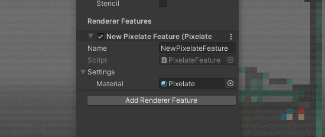

Unity 2019.3.5f1 URP 7.3.1 April 6th 2020
Pixelation Shader
I created a basic pixelation shader, free to use. The 3D model of the subway car was created by Luc Miramont on sketchfab. The shader you can download below is slightly more advanced than in the video. It has 2 scanlines and some more parameters.
Custom Pass
The effect uses a custom render pass to apply the effect as an image effect to the scene. I included the renderer and pipeline asset in the project. Basically you go to your renderer and add the 'Pixelate Pass' as a renderer feature. Then you drag the pixelate material into the slot and you're done!
You can download the source files here.
Have questions or feedback? Contact me!